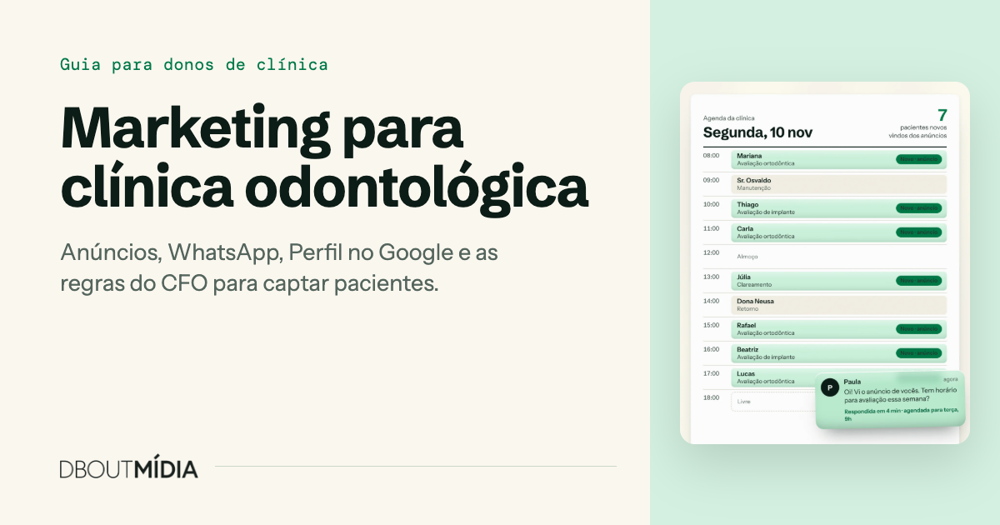

O Brasil tem 475.160 cirurgiões-dentistas ativos e 102.839 entidades prestadoras de assistência odontológica, a categoria em que as clínicas se registram, segundo consulta feita em 10/11/2026 ao Conselho Federal de Odontologia (CFO). Do outro lado, só 49,4% dos brasileiros tinham ido ao dentista nos 12 meses anteriores à Pesquisa Nacional de Saúde de 2019, o dado oficial mais recente (IBGE).
Marketing para clínica odontológica é o trabalho de ligar essas duas pontas: ser encontrado por quem mora perto, receber o contato, transformar o contato em consulta e a consulta em tratamento. As seções abaixo cobrem cada etapa, com dados brasileiros, as fórmulas para medir o resultado e as regras do CFO sobre o que um anúncio pode dizer.
O guia trata da captação paga e do atendimento que transforma contato em consulta. Conteúdo orgânico em redes sociais, indicação e reativação de pacientes antigos ficam fora deste texto. A leitura segue o caminho do paciente, do anúncio à consulta. A ordem de execução é outra e está no plano de 90 dias, que começa pela base e pelas regras.
Principais pontos
- O CFO registrava 475.160 dentistas ativos e 102.839 entidades odontológicas em novembro de 2026. No último atendimento, 60,1% dos adultos pagaram pela consulta (Fagundes et al., 2021, com dados da PNS 2019).
- Google Ads capta quem já procura dentista. Meta Ads alcança quem mora perto e ainda não procurou.
- O Código de Ética Odontológica veda anunciar preço, forma de pagamento e consulta ou diagnóstico gratuito (arts. 20, IX, e 44, I). “Avaliação gratuita” em anúncio é infração ética.
- Lembrete reduz falta em consultas de saúde em geral: em revisão Cochrane de 2013, o comparecimento foi de 67,8% sem lembrete e de 78,6% com mensagem de texto.
- Não há referência pública confiável de custo por lead em odontologia no Brasil. A régua é o histórico da própria clínica.
O mercado odontológico no Brasil em números
A odontologia brasileira junta muita oferta com procura desigual: há quase meio milhão de dentistas, e ir ao consultório ainda depende de renda e de região.
Concorrência
O CFO registrava 475.160 cirurgiões-dentistas ativos e 102.839 entidades prestadoras de assistência odontológica em 10/11/2026 (CFO, Quantidade Geral de Profissionais e Entidades Ativas). Só o estado de São Paulo tinha 126.682 dentistas, pouco mais de um quarto do total. Com essa oferta, a clínica que não aparece na busca e demora a responder corre o risco de perder o paciente para o consultório vizinho.
Quem vai ao dentista
Em 2019, 49,4% das pessoas tinham consultado um dentista nos 12 meses anteriores, contra 44,4% em 2013 (Pesquisa Nacional de Saúde 2019, do IBGE, p. 41-42). O percentual ia de 40,8% no Norte a 55,8% no Sul, com 43,3% no Nordeste, 49,0% no Centro-Oeste e 53,0% no Sudeste. Na área urbana era de 51,2%; na rural, de 38,7%.
A renda separa mais que a região. Entre quem vivia com até um quarto de salário mínimo por pessoa, 36,0% foram ao dentista no período. Na faixa de um a dois salários, 53,0%. Acima de cinco salários, 75,7%, mais que o dobro da faixa mais baixa (IBGE, PNS 2019). O dado é autodeclarado e de 2019, mas segue sendo o levantamento oficial mais recente.
Para a clínica, isso significa que a procura muda de bairro para bairro. Antes de definir onde anunciar e quais tratamentos destacar, olhe a renda e o perfil da região que a clínica consegue atender.
Particular, plano ou serviço público
O pagamento direto é a principal porta de entrada. Na análise de Fagundes e colegas sobre 88.531 adultos da PNS 2019, publicada na Revista Brasileira de Epidemiologia em 2021, 60,1% pagaram pelo último atendimento odontológico, 24,4% foram ao serviço público e 12,9% usaram plano.
Os planos crescem. Em 2019, o plano odontológico cobria 12,9% da população (IBGE, PNS 2019). O percentual coincide com o de quem usou plano no último atendimento, mas mede outra coisa: a cobertura na população inteira.
Em junho de 2026, os planos exclusivamente odontológicos somavam 36.711.046 beneficiários, alta de 7,6% em 12 meses (Instituto de Estudos de Saúde Suplementar (IESS), Análise Especial 120, com dados da Agência Nacional de Saúde Suplementar (ANS)). O número conta vínculos, não pessoas: quem tem dois planos aparece duas vezes. Aceitar ou não convênio muda o público que chega, e a lista de convênios pode constar no anúncio.
Anúncios pagos: Meta Ads e Google Ads para clínica odontológica
Anúncio pago coloca a clínica na frente de quem mora perto sem esperar o perfil crescer sozinho. As duas plataformas fazem trabalhos diferentes: o Google Ads responde a uma busca, e o Meta Ads (Facebook e Instagram) aparece para quem não estava procurando.
O público está nas duas. Segundo a TIC Domicílios 2025, do Cetic.br, 85% dos brasileiros de 10 anos ou mais usam internet. Entre os usuários, 81% usaram redes sociais nos três meses anteriores à entrevista, 57% buscaram informações sobre produtos e serviços e 52% buscaram informações sobre saúde.
Em alcance de anúncios, o DataReportal registrou em outubro de 2026, no Brasil, 154 milhões de usuários no YouTube, 152 milhões no TikTok (18 anos ou mais), 144 milhões no Instagram e 106 milhões no Facebook. São números informados pelas próprias plataformas e não equivalem a pessoas únicas.
Alcance nacional não é motivo para anunciar em todas as redes. A clínica atende um raio limitado em volta do endereço, e a recomendação é concentrar a verba em um ou dois canais que ela consiga medir. Um exemplo de como essa etapa se organiza, do contrato ao anúncio no ar, está na página inicial da agência.
Quando usar Google Ads
Use o Google Ads para captar quem já decidiu procurar um dentista. A pessoa digita “dentista” seguido do bairro, “implante dentário” seguido da cidade ou “dentista 24 horas”, e o anúncio aparece junto aos resultados. É o canal indicado para urgência e para tratamentos que o paciente já sabe nomear. O limite é o volume de buscas da região: aumentar a verba não cria procura.
Quando usar Meta Ads
Use o Meta Ads para alcançar moradores da região que ainda não procuraram um dentista, inclusive para tratamentos que não nascem de uma urgência, como aparelho ortodôntico e prótese. O anúncio pode abrir uma conversa no WhatsApp, levar a um formulário dentro da plataforma ou a uma página da clínica.
A política de saúde e bem-estar da Meta exige que anúncios de procedimentos cosméticos sejam direcionados a maiores de 18 anos. A aprovação da plataforma, porém, não significa que a peça esteja de acordo com o CFO: são regras independentes.
O que anunciar
Dentro do que o Código de Ética Odontológica lista como permitido, o anúncio pode informar:
- a especialidade registrada (ou “clínico geral”) seguida dos procedimentos e áreas de atuação;
- nome e número de inscrição no Conselho Regional de Odontologia (CRO) da clínica e do responsável técnico, que são obrigatórios;
- endereço, telefone, horários e convênios aceitos.
A recomendação é usar conteúdo explicativo: para quem o tratamento é indicado, como é a primeira consulta e quais são as etapas, sem promessa de resultado. Ficam fora preço, forma de pagamento, consulta ou avaliação gratuita e a palavra “popular”.
Segmentação por região
Limite a entrega ao território de onde os pacientes realmente vêm. O cadastro da clínica tem essa resposta: liste os bairros dos pacientes atuais e defina a área a partir deles.
- No Meta Ads, use um raio em torno do endereço e revise depois de ver de onde chegam os contatos.
- No Google Ads, confira nas opções de local se a campanha alcança só quem está ou costuma estar na região, e não quem apenas pesquisa sobre ela.
- Cite o bairro ou a cidade no texto, para que o leitor reconheça que a clínica é perto.
Do lead ao paciente: resposta, WhatsApp, agendamento e lembrete
Lead é o contato de alguém que demonstrou interesse. Paciente é quem compareceu à consulta. Entre um e outro, o trabalho é da recepção, não do anúncio.
Resposta rápida
Quem manda mensagem para uma clínica pode estar falando com outras ao mesmo tempo. Defina quem responde, em quais horários e o que acontece fora do expediente: uma mensagem automática que informe quando a pessoa será atendida evita o silêncio. Contatos da noite e do fim de semana devem ser os primeiros da fila no dia útil seguinte.
WhatsApp como canal de atendimento
O WhatsApp é o canal em que o brasileiro já fala com empresas. O aplicativo estava instalado em 99% dos smartphones do país em janeiro de 2025 (Mobile Time/Opinion Box). Em pesquisa da Opinion Box de junho de 2025 com 1.126 usuários, 82% disseram já ter falado com empresas pelo aplicativo, e tirar dúvidas foi o motivo mais citado, com 75% (Canaltech, fonte secundária, painel online).
Um roteiro de conversa:
- Identifique a clínica e quem está falando, e chame a pessoa pelo nome.
- Pergunte o que ela procura.
- Não faça diagnóstico por mensagem. Explique que a indicação e o valor do tratamento dependem do exame clínico.
- Ofereça dois horários concretos em vez de perguntar quando a pessoa pode.
- Confirme data, hora, endereço e nome do profissional na mesma conversa.
Limite esse contato a quem procurou a clínica. O Código de Ética veda o aliciamento por telemarketing ativo à população em geral (art. 44, XIV), então listas compradas e disparos em massa para desconhecidos ficam fora do plano.
Agendamento
Registre a origem de cada agendamento, com o anúncio e o canal, na agenda ou no sistema da clínica. Sem esse registro não dá para calcular o custo por avaliação agendada nem saber qual campanha traz paciente.
Lembrete e falta
Lembrete aumenta o comparecimento. Uma revisão Cochrane de 2013, com 7 estudos e 5.841 participantes, encontrou comparecimento de 67,8% sem lembrete, 78,6% com lembrete por SMS e 80,3% com ligação telefônica (Cochrane, Gurol-Urganci et al.). A revisão trata de consultas de saúde em geral e de SMS, não de WhatsApp nem de odontologia, mas indica a direção do efeito.
Sobre faltas em odontologia, o dado brasileiro disponível vem do serviço público: em três centros de especialidades do Ceará, houve falta em 32,17% das consultas de ortodontia, 2.665 de 8.283 (Fonseca et al., Ciência & Saúde Coletiva, 2018). Não é taxa nacional nem de clínica particular. Para o consultório privado, o número que vale é o da própria agenda.
Rotina sugerida: lembrete na véspera com pedido de confirmação, novo lembrete no dia e, se o paciente faltar, contato no mesmo dia para remarcar, com o motivo anotado.
A base de captação: Perfil no Google, avaliações e página no celular
Quem vê o anúncio pode pesquisar o nome da clínica antes de chamar. O que aparece nessa hora, o perfil no Google, as avaliações e a página, pesa na decisão.
Perfil da Empresa no Google
Segundo a Ajuda do Google, a classificação local se baseia em relevância, distância e destaque, e não é possível pagar por uma posição melhor. Distância a clínica não controla. Nas outras duas ela pode trabalhar, com perfil completo e avaliações.
O Google afirma que clientes são 2,7 vezes mais propensos a considerar confiável uma empresa com perfil completo e 70% mais propensos a visitá-la (Ajuda do Google). A página não informa o estudo, o ano nem o país, então leia o número como declaração da empresa, não como medição independente.
Preencha nome igual ao da fachada, categoria, endereço, telefone, link para o WhatsApp, horários (inclusive feriados), serviços e fotos reais da fachada, da recepção e da equipe.
Avaliações
Mais avaliações e avaliações positivas ajudam na classificação local, segundo a mesma página do Google. Peça a avaliação logo depois do atendimento, com o link enviado pelo WhatsApp, e não ofereça nada em troca. O Código de Ética veda oferecer serviços como brinde, prêmio ou sorteio (art. 20, VIII e X, na redação de 2025). A regra não fala de avaliações, e estendê-la a esse caso é uma leitura prudente.
Responda a todas, inclusive às negativas, sem confirmar tratamento nem citar detalhe clínico. Dado de saúde é dado pessoal sensível pela Lei Geral de Proteção de Dados (LGPD), e resposta pública não é lugar para ele.
Página de destino no celular
A página que recebe o clique tende a ser aberta no celular: entre os usuários de internet no Brasil, 99% acessam pelo aparelho e 65% só por ele (Cetic.br, TIC Domicílios 2025). Sobre velocidade, há uma referência histórica: em fevereiro de 2017, o Think with Google informava que 53% dos visitantes abandonavam uma página mobile que levava mais de 3 segundos para carregar. O número é antigo e serve como ordem de grandeza.
A página precisa de pouco:
- tratamento e especialidade no topo, com nome e CRO da clínica e do responsável técnico;
- botão de WhatsApp visível sem rolar a tela;
- endereço, mapa e horários;
- formulário curto, com o consentimento descrito na seção sobre LGPD;
- nenhum preço, parcelamento ou “avaliação gratuita”.
O que o CFO permite e proíbe na publicidade odontológica
A publicidade de dentistas e clínicas segue três textos do Conselho Federal de Odontologia: o Código de Ética Odontológica (Resolução CFO-118/2012), a Resolução CFO-196/2019, sobre imagens de pacientes, e a Resolução CFO-271/2025, que alterou os arts. 20, 32 e 44 do Código. O que segue é um resumo dessas normas, não um parecer jurídico. Na dúvida sobre uma peça, consulte o CRO do seu estado.
Todo anúncio deve trazer o nome e o número de inscrição no CRO da pessoa física ou jurídica e a denominação da profissão. Clínicas informam também o nome e o CRO do responsável técnico (art. 43). Proprietários e responsável técnico respondem solidariamente pelas infrações (art. 45), por isso convém que o responsável técnico aprove cada peça, mesmo quando um funcionário ou uma agência cuida dos anúncios.
| Tema | Permitido | Proibido |
|---|---|---|
| Meios e dados da clínica | Anunciar em qualquer meio; endereço, telefone, horários, convênios e logomarca (arts. 42 e 43) | A expressão “popular” (art. 44, VII); aliciamento por telemarketing ativo à população em geral (art. 44, XIV) |
| Especialidades e procedimentos | Áreas de atuação e procedimentos, precedidos da especialidade registrada ou de “clínico geral”; a clínica só anuncia especialidade se tiver profissional inscrito nela (arts. 42 e 43) | Título ou especialidade que o profissional não possui; técnica sem comprovação científica |
| Preço, pagamento e gratuidade | Desde a Res. 271/2025, oferta de desconto e cartão de desconto deixaram de constar como infração | Publicidade com preços, serviços gratuitos ou modalidades de pagamento (art. 44, I); consultas e diagnósticos gratuitos ou sem compromisso (art. 20, IX); serviços como brinde, prêmio ou sorteio (art. 20, VIII e X) |
| Imagens de pacientes | Selfie com paciente, com termo de consentimento livre e esclarecido (TCLE); imagens de diagnóstico e de conclusão do tratamento, divulgadas pelo dentista que executou o procedimento, com TCLE, nome e CRO (Res. 196/2019) | Imagens ou vídeos do transcurso do procedimento (Res. 196/2019, art. 3º); casos clínicos de terceiros (art. 4º); promessa de resultado, sensacionalismo e autopromoção (art. 2º, §1º); “antes e depois” segue citado como infração no Código (art. 44, I e XII) |
“Avaliação gratuita” é infração ética
O Código classifica como infração ética “divulgar ou oferecer consultas e diagnósticos gratuitos ou sem compromisso” (art. 20, IX) e veda publicidade com serviços gratuitos (art. 44, I). Chamadas como “avaliação gratuita”, “primeira consulta grátis” e “diagnóstico sem compromisso” caem nessa regra.
Como o inciso fala em “divulgar ou oferecer”, a leitura prudente é aplicar a regra também ao post, à página e à conversa com o lead. O anúncio pode convidar para a consulta de avaliação e explicar o que será examinado, sem dizer que é de graça.
Preço e forma de pagamento
O art. 44, I, veda publicidade com preços e modalidades de pagamento. Expressões como “a partir de R$”, “10x sem juros” e “parcelamos no boleto” não entram no anúncio.
O que mudou em 2025 sobre descontos
Em 2025, a Resolução CFO-271 alterou os arts. 20, 32 e 44 do Código em cumprimento a uma decisão do Conselho Administrativo de Defesa Econômica (Cade). Com ela, o cartão de desconto e a oferta de desconto deixaram de constar como infração.
A mudança é pontual. Na leitura dos textos oficiais feita em 10/11/2026, continuam como infração a publicidade com preços, serviços gratuitos e modalidades de pagamento e a oferta de consulta ou diagnóstico gratuito. A norma não detalha como divulgar um desconto sem informar preço, por isso leve qualquer campanha desse tipo ao CRO antes de publicar.
O PDF do Código no site do CFO é o de 2012 e não traz as alterações de 2025, então precisa ser lido junto com a Resolução 271. O CFO informou que prepara uma revisão integral do Código, sem prazo. As regras podem mudar.
“Antes e depois”: o Código e a Resolução 196
Neste ponto as normas não dizem a mesma coisa. O Código ainda cita “antes e depois” como infração (art. 44, I e XII). A Resolução CFO-196/2019 autoriza a divulgação de imagens de diagnóstico e de conclusão do tratamento, desde que feita pelo dentista que executou o procedimento, com TCLE do paciente, nome e CRO.
A mesma resolução proíbe imagens ou vídeos do transcurso do procedimento (art. 3º), casos clínicos de terceiros (art. 4º) e promessa de resultado, sensacionalismo ou autopromoção (art. 2º, §1º). O caminho mais seguro é tratar o material como imagem de diagnóstico e de resultado final, nos termos da Res. 196/2019, nunca mostrar o “durante” e confirmar com o CRO do estado antes de divulgar.
LGPD no formulário de captação
O formulário que pergunta a queixa ou o tratamento de interesse coleta dado de saúde, que a Lei 13.709/2018 classifica como dado pessoal sensível (art. 5º, II). O tratamento desse dado exige consentimento específico e destacado ou outra hipótese do art. 11.
Como recomendação prática:
- peça só o que a recepção vai usar: nome, telefone e, se necessário, o tratamento de interesse;
- inclua uma caixa de consentimento separada, com a finalidade em uma frase: contato para agendar a consulta;
- guarde os contatos em sistema ou planilha com acesso restrito, fora de grupos de WhatsApp.
As métricas que importam
A captação se mede em quatro pontos do caminho: quanto custa o contato, quanto custa a avaliação agendada, quantos agendados comparecem e quanto volta em receita.
Não existe referência pública confiável de custo por lead, custo por clique ou custo por agendamento em odontologia no Brasil. Desconfie de número que não informe amostra, período e região. A régua é o histórico da própria clínica: o mês atual comparado com os anteriores.
| Métrica | Fórmula | O que mostra |
|---|---|---|
| Custo por lead (CPL) | investimento em anúncios ÷ número de leads | Quanto custa gerar um contato |
| Custo por avaliação agendada | investimento em anúncios ÷ avaliações agendadas | Quanto custa colocar uma pessoa na agenda |
| Taxa de comparecimento | pacientes que compareceram ÷ avaliações agendadas × 100 | Quanto da agenda vira consulta |
| Retorno sobre o investimento em anúncios | receita dos tratamentos fechados vindos dos anúncios ÷ investimento em anúncios | Quantos reais entram para cada real investido |
Exemplo hipotético
Os números abaixo são inventados para mostrar a conta. Não são média de mercado nem meta.
| Etapa | Número hipotético | Conta | Resultado |
|---|---|---|---|
| Investimento no mês | R$ 3.000 | ||
| Leads | 120 | 3.000 ÷ 120 | CPL de R$ 25 |
| Avaliações agendadas | 40 | 3.000 ÷ 40 | R$ 75 por avaliação agendada |
| Comparecimentos | 28 | 28 ÷ 40 × 100 | 70% de comparecimento |
| Receita dos tratamentos fechados | R$ 12.000 | 12.000 ÷ 3.000 | R$ 4 de receita para cada R$ 1 investido |
O CPL sozinho engana: um lead barato que não agenda sai mais caro que um lead caro que comparece. No mesmo exemplo, se a recepção levasse 32 pessoas à consulta em vez de 28, o comparecimento iria a 80% e o custo por paciente presente cairia de R$ 107,14 para R$ 93,75, sem um real a mais em anúncio.
Retorno aqui é receita, não lucro: falta descontar o custo do tratamento. Em tratamentos longos, como ortodontia, escolha um critério (valor contratado ou valor recebido no mês) e mantenha o mesmo todo mês.
Plano de 90 dias
A ordem importa: base e regras primeiro, anúncios depois, ajuste por último.
Dias 1 a 30: base e regras
- Complete o Perfil da Empresa no Google e comece a pedir avaliação no Google a cada paciente atendido.
- Ajuste a página de destino para o celular, com botão de WhatsApp, CRO e formulário com consentimento.
- Revise anúncios, posts e página à luz do CFO: retire “avaliação gratuita”, preço e parcelamento, e inclua nome e CRO.
- Defina a rotina da recepção: quem responde, roteiro de conversa, lembrete e registro da origem de cada agendamento.
Dias 31 a 60: primeiros anúncios
- Escolha um ou dois tratamentos para anunciar, em vez da clínica inteira.
- Coloque no ar uma campanha no Google Ads, uma no Meta Ads ou ambas, restritas à região de onde vêm os pacientes atuais.
- Anote toda semana leads, avaliações agendadas, comparecimentos e tratamentos fechados, por origem.
Dias 61 a 90: medir e ajustar
- Calcule custo por lead, custo por avaliação agendada, taxa de comparecimento e retorno.
- Reduza a verba do que gera lead que não agenda e reforce o que gera paciente presente.
- Se o comparecimento estiver baixo, corrija lembrete e remarcação antes de aumentar a verba.
- Guarde os números do trimestre: eles são a referência para os meses seguintes.
Veja também outros artigos sobre captação de pacientes.
Perguntas frequentes
Quanto investir em anúncios para uma clínica odontológica?
Não há valor de referência confiável para odontologia no Brasil. Comece com uma verba que a clínica consiga manter por 90 dias e avalie pelo custo por avaliação agendada e pelo retorno, não pelo valor gasto. Aumente só quando a recepção der conta dos contatos que já chegam.
Posso anunciar avaliação gratuita ou desconto?
Avaliação gratuita, não: o Código de Ética Odontológica trata como infração divulgar ou oferecer consulta ou diagnóstico gratuito (art. 20, IX) e publicidade com serviços gratuitos (art. 44, I). A oferta de desconto deixou de constar como infração com a Resolução CFO-271/2025, mas preço e forma de pagamento em publicidade continuam vetados. Consulte o CRO antes de divulgar qualquer desconto.
Meta Ads ou Google Ads: por onde começar?
Depende do tratamento. Para urgência e para procedimentos que o paciente já pesquisa pelo nome, comece pelo Google Ads. Para alcançar moradores da região que ainda não procuraram, comece pelo Meta Ads com conversa no WhatsApp. Com verba curta, é melhor um canal bem medido do que dois pela metade.
Em quanto tempo os anúncios trazem pacientes?
Não há prazo garantido. O anúncio pode gerar contatos assim que entra no ar, mas entre o contato e o tratamento fechado existem resposta, agendamento, comparecimento e a decisão do paciente. Por isso o resultado deve ser analisado com pelo menos 90 dias de histórico, e não pelas primeiras semanas.
Conclusão
Marketing para clínica odontológica funciona como um processo: base bem montada, anúncio dentro das regras do CFO, recepção que responde e lembra, e números acompanhados mês a mês. Quando uma dessas partes falha, aumentar a verba não resolve.
Se quiser uma segunda leitura sobre a captação da sua clínica, peça o diagnóstico gratuito de captação da Dbout Mídia. É um serviço de agência para o dono ou gestor da clínica, não um serviço odontológico para pacientes.
Sobre o autor e este guia
Este guia foi escrito por César Augusto (@manualdotrafego) para a Dbout Mídia, agência de tráfego pago e captação de pacientes para clínicas odontológicas em todo o Brasil.
Os números deste guia foram conferidos nas fontes originais em 10/11/2026, e cada um aparece com a fonte, o ano e a limitação do dado. Onde não existe dado público confiável, como no custo por lead em odontologia, o texto diz isso em vez de estimar. O resumo das normas do CFO não substitui a consulta ao Conselho Regional de Odontologia.
Fontes
- CFO. Quantidade Geral de Profissionais e Entidades Ativas. Consulta em 10/11/2026.
- IBGE. Pesquisa Nacional de Saúde 2019: informações sobre domicílios, acesso e utilização dos serviços de saúde. Dados de 2019.
- Fagundes et al. Revista Brasileira de Epidemiologia, 2021. Artigo na SciELO, análise da PNS 2019 com 88.531 adultos.
- IESS. Análise Especial 120, com dados da ANS de junho de 2026.
- Cetic.br. TIC Domicílios 2025, resumo executivo. Entrevistas de março a setembro de 2025.
- DataReportal. Digital 2027: Brazil. 05/11/2026.
- Mobile Time/Opinion Box. Notícia do Mobile Time com a pesquisa de janeiro de 2025. 13/02/2025.
- Canaltech. Reportagem sobre a pesquisa WhatsApp da Opinion Box. Pesquisa de junho de 2025.
- Cochrane (Gurol-Urganci et al.). Revisão sobre lembretes por mensagem de celular e comparecimento a consultas de saúde. 2013.
- Fonseca et al. Ciência & Saúde Coletiva, 2018. Artigo na SciELO, faltas a consultas de ortodontia em três centros públicos de especialidades do Ceará.
- Ajuda do Google. Dicas para melhorar sua classificação local no Google.
- Ajuda do Google. Completar o Perfil da Empresa no Google.
- Think with Google. Referências de velocidade de páginas mobile. Fevereiro de 2017.
- Brasil. Lei 13.709/2018, Lei Geral de Proteção de Dados Pessoais, texto atualizado no portal da Câmara dos Deputados.
- Meta. Política de anúncios “Health and Wellness”.
- CFO. Código de Ética Odontológica, Resolução CFO-118/2012.
- CFO. Resolução CFO-196/2019.
- CFO. Resolução CFO-271/2025.
- CFO. Em cumprimento à decisão do Cade, CFO realiza alterações pontuais no Código de Ética.